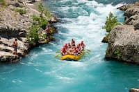

Come and experience the thrill of whitewater rafting with us! The adventure of a lifetime awaits you!


Come and experience the thrill of whitewater rafting with us! The adventure of a lifetime awaits you!
Whitewater rafting in Idaho has a rich history. Commercial whitewater rafting trips began on the Salmon River in June 1940, using military surplus rafts. The Smith family of Salmon, Idaho, were the first to go on a commercial whitewater river trip on their native Salmon River. Whitewater rafting has its roots in ancient traditions of tribes in Oregon and Idaho, who used boats to navigate the white water of the Columbia River and Snake River for fish. Indigenous Americans were the first to navigate rivers and rapids in search of fish, game, and new lands.
Whitewater rafting has evolved significantly over the years, with advancements in equipment and safety measures. Today, it is a popular recreational activity enjoyed by people of all ages and skill levels. The thrill of navigating through rapids and the beauty of the surrounding landscapes make it an unforgettable experience.